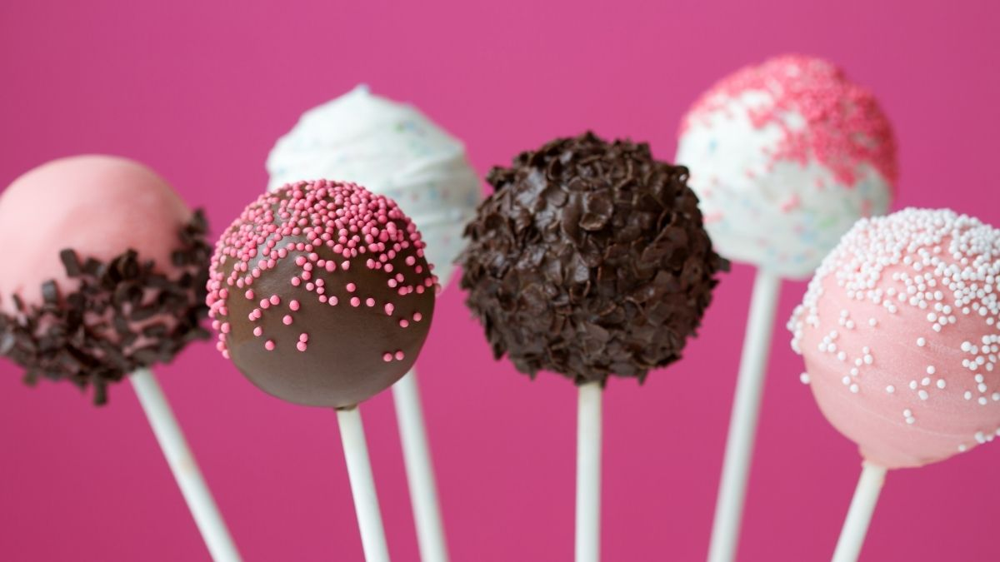

Cake Pops

Easy Cake Pops
Tasty, easy-making, and perfect for kids.
Ingredients
- 1 package yellow cake mix
- 1 cup water
- 3 eggs
- ½ cup vegetable oil
- 1 package cream cheese, softened
- lollipop sticks
- 1 bag chocolate confectioners' coating
Steps
- Preheat oven to 350 degrees F (175 degrees C). Grease a 9x13-inch baking dish.
- Beat cake mix, water, eggs, and vegetable oil together in a bowl using an electric mixer on low speed for 30 seconds; increase speed to medium and beat until batter is smooth, about 2 minutes more. Pour batter into the prepared baking dish.
- Bake in the preheated oven until a toothpick inserted in the center comes out clean, 28 to 33 minutes. Cool cake completely, at least 1 hour.
- Crumble cake into a large bowl and mix in cream cheese. Roll cake mixture into about 40 to 50 quarter-size balls. Insert a lollipop stick into each cake ball and arrange on a baking sheet; refrigerate until chilled, at least 30 minutes.
- Melt chocolate in a microwave-safe glass or ceramic bowl in 15-second intervals, stirring after each melting, 1 to 3 minutes.
- Dip each cake ball into melted chocolate until coated. Arrange cake pops on a baking sheet to dry.
Cook's Notes:
Any flavor cake mix can be used in place of the yellow cake mix.
You can use different food colorings for the chocolate. White chocolate bark can be used in place of the chocolate bark, if desired. Add a drop of red food coloring for a pink coating.